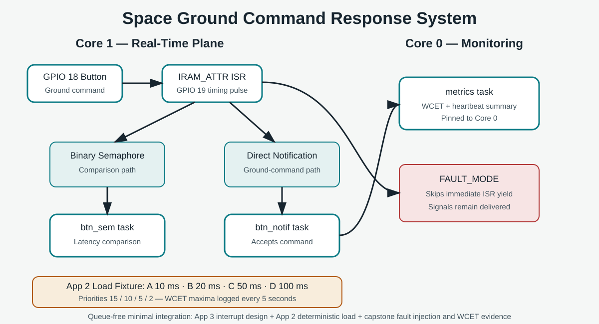
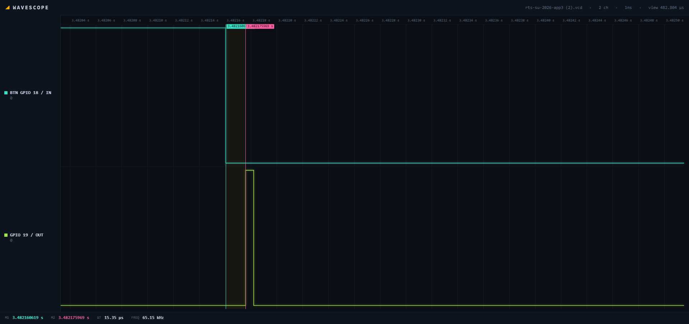
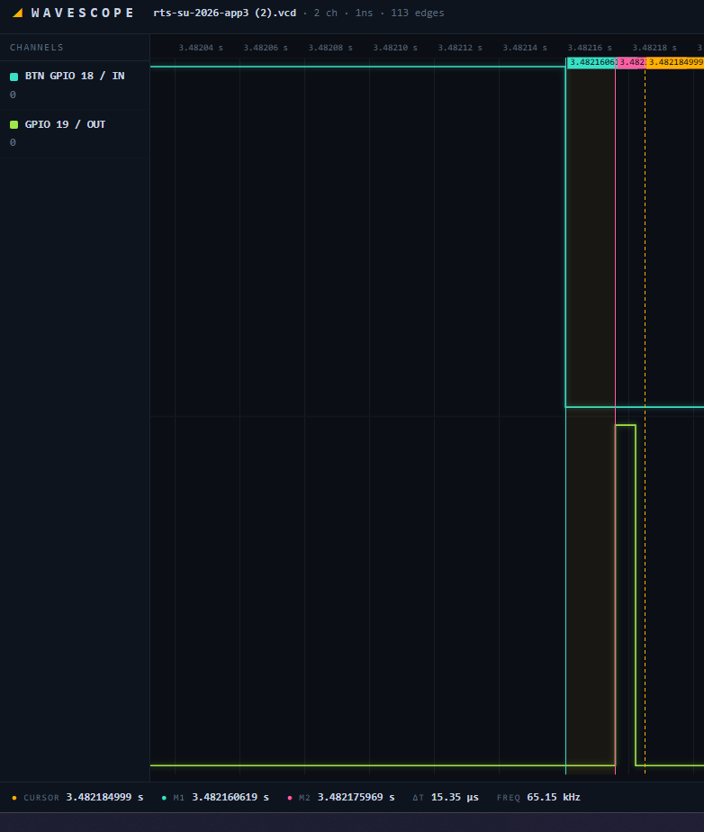
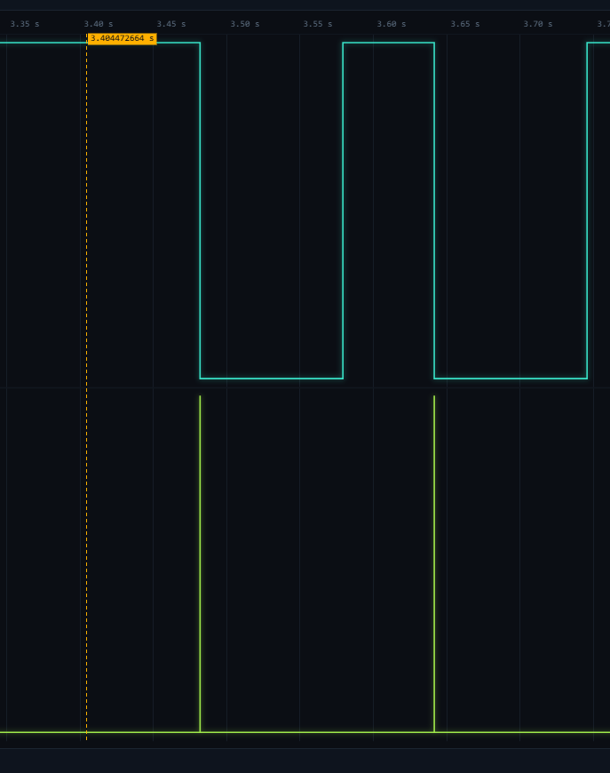

Project overview
A GPIO 18 button represents a ground command. The short IRAM_ATTR ISR timestamps the command, creates a GPIO 19 timing pulse, signals two bottom-half tasks, and exits. Direct task notification is the final command path, while the binary semaphore is retained for comparison. Four periodic App 2 tasks create controlled Core-1 load.
Architecture

Core 1 contains the real-time interrupt response and deterministic load. A low-priority Core-0 task reports load-task WCET maxima and heartbeat counters every five seconds.
Measured evidence
15.35 µs
GPIO 18 falling edge to GPIO 19 rising edge
1983 µs
2198 µs
2488 µs
| Configuration | Presses | Notification max | Semaphore max |
|---|---|---|---|
| Idle normal | 50 | 1983 µs | 2383 µs |
| Loaded normal | 57 | 2198 µs | 2488 µs |
| Loaded fault | 48 | 2204 µs | 2367 µs |
Engineering analysis
Why a short ISR?
It keeps interrupt blocking bounded. Timestamping and ISR-safe signaling are performed in the top half; logging and command handling are deferred.
Why direct notification?
The design is one ISR to one responder. A task notification fits that contract without a separate semaphore object.
Why does load matter?
Load Task A has priority 15 and can preempt the priority-12 responders, increasing observed wake latency even though the ISR stays short.
Why do results alternate?
Both responders wake together at the same priority. The first responder and serial logging can delay the second, so results include scheduler and instrumentation effects.
What did fault injection show?
Signals remained delivered when the immediate ISR yield was skipped. Maximum latency stayed similar in Wokwi, so no exaggerated degradation claim is made.
How is WCET collected?
Each periodic load body is wrapped by a maximum execution-time macro. A Core-0 metrics task prints maxima and heartbeats every five seconds.
Fault injection and graceful degradation
portYIELD_FROM_ISR() request while leaving the semaphore and notification deliveries active. The system continues handling accepted commands and clearly identifies the degraded build at startup.Hazard analysis
The analysis covers delayed commands, coalesced semaphore events, excessive ISR work, misleading instrumentation, overload, and accidental fault-mode builds.
Evidence gallery



Recruiter-focused summary
This project demonstrates a complete embedded engineering story: interrupt design, ISR-safe RTOS communication, priority interactions, multicore separation, deterministic load generation, WCET instrumentation, timing evidence, fault injection, hazard analysis, and honest interpretation of simulator limitations.